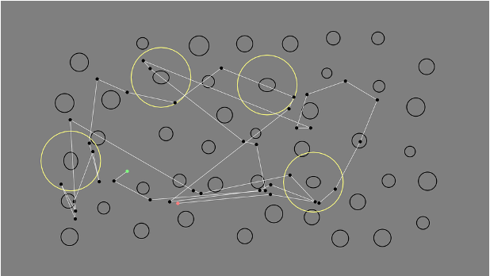
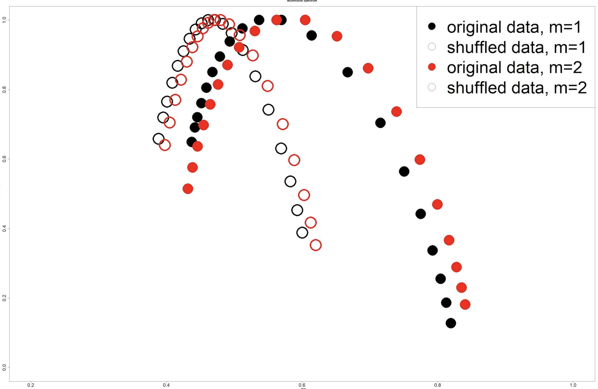
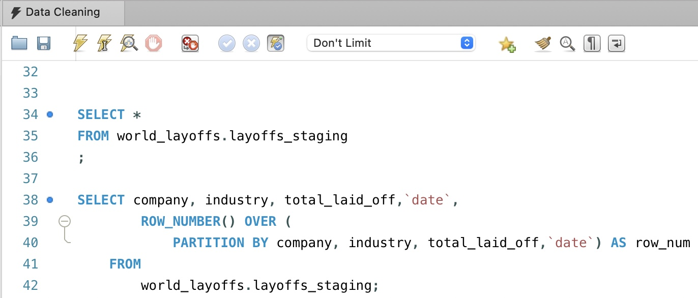
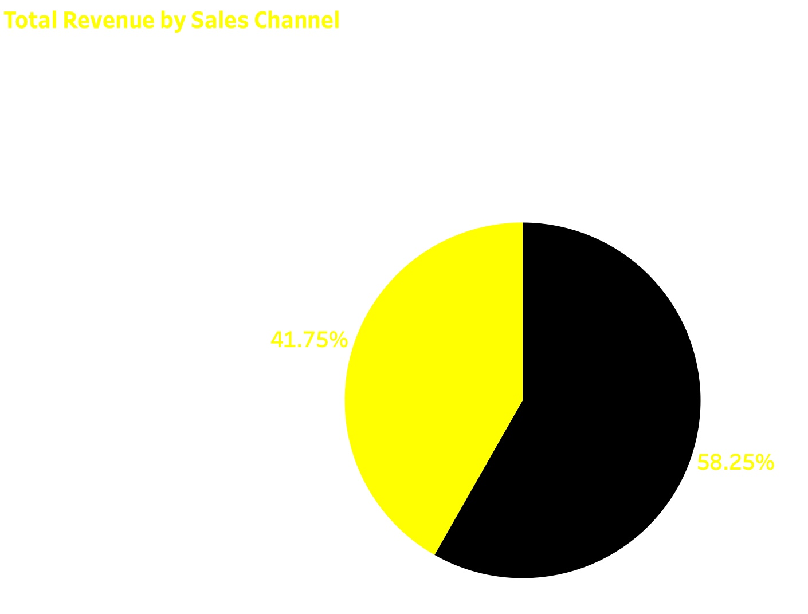

Analyzed eye-tracking data to investigate visual attention patterns.
Applied quantitative methods to compare scanpaths and extract meaningful insights from behavioral data.

Applied time series analysis to eye-tracking fixation data to investigate long-range correlations and
multifractal behavior during visual search.
Built ARFIMA models and performed fractal analysis using Python, MATLAB, and R to
study memory-related patterns in human visual cognition.
View on GitHub

Cleaned and transformed a layoffs dataset using SQL. Performed data cleaning, duplicate removal,
standardization, and handled missing values using MySQL.
View on GitHub

Built an interactive Tableau dashboard to explore trends, identify patterns,
and communicate insights through data visualization.